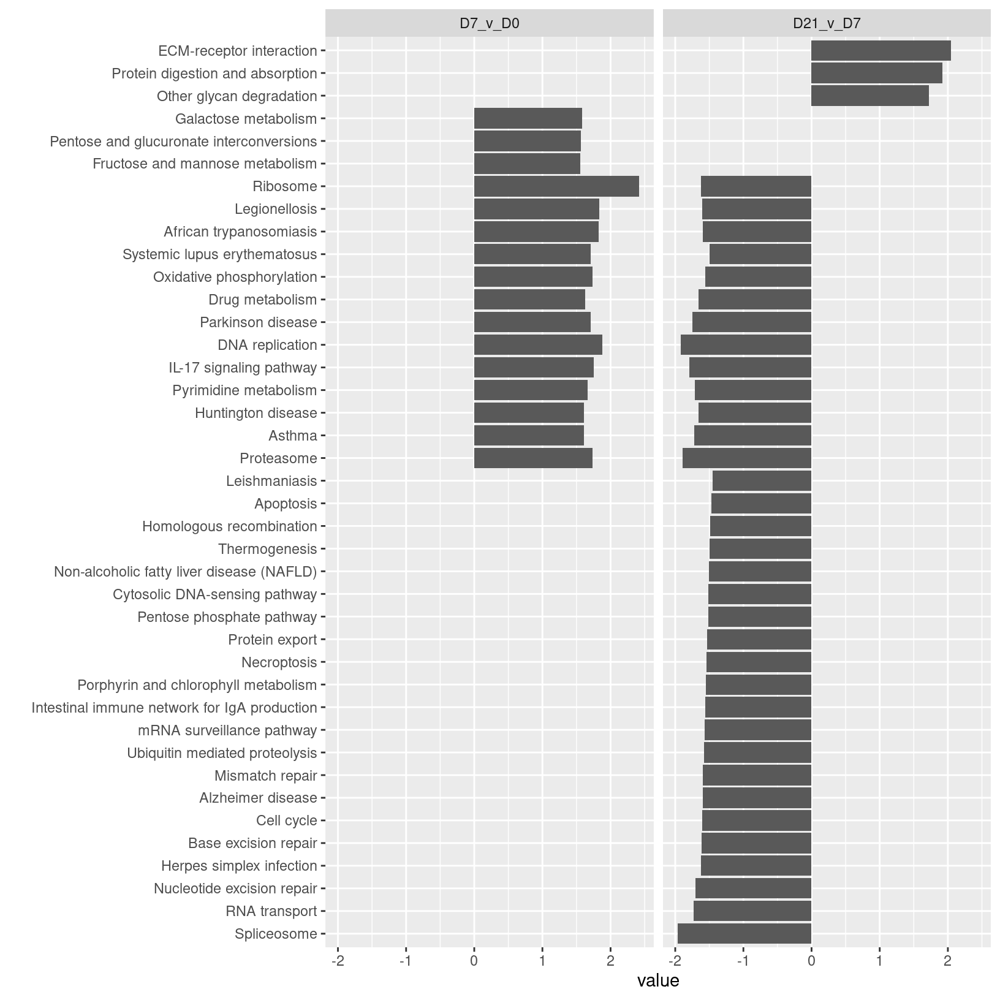

Advanced Visualizations II

Objectives
- Compare significant pathways between multiple enrichment results
- Highlight some interesting pathways from the meta-analysis
Getting started
# =========================================================================
# Advanced Visualizations II
# =========================================================================
# -------------------------------------------------------------------------
# Load additional libraries
library(ComplexHeatmap)
library(ggVennDiagram)
# -------------------------------------------------------------------------
# Check current working directory
getwd()[1] "/Users/cgates/git/workshop-intro-functional-analysis/source"We should have the GSEA results in our session but we can read in the
results from the table output to file by WebGestaltR for
the results from the Day21 vs Day7 and Day7 vs Day 0 pericyte
single-cell RNA-seq comparisons.
# -------------------------------------------------------------------------
# Read in results for the enrichment for each set of timpoint comparisons
isc_d21_v_d7_gsea_result = read_delim('results/Project_D21_v_D7_GSEA_KEGG/enrichment_results_D21_v_D7_GSEA_KEGG.txt')Rows: 37 Columns: 12
── Column specification ──────────────────────────────────────────────────────────────────────────
Delimiter: "\t"
chr (6): geneSet, description, link, plotPath, leadingEdgeId, userId
dbl (6): enrichmentScore, normalizedEnrichmentScore, pValue, FDR, size, leadingEdgeNum
ℹ Use `spec()` to retrieve the full column specification for this data.
ℹ Specify the column types or set `show_col_types = FALSE` to quiet this message.isc_d7_v_d0_gsea_result = read_delim('results/Project_D7_v_D0_GSEA_KEGG//enrichment_results_D7_v_D0_GSEA_KEGG.txt')Rows: 16 Columns: 12
── Column specification ──────────────────────────────────────────────────────────────────────────
Delimiter: "\t"
chr (6): geneSet, description, link, plotPath, leadingEdgeId, userId
dbl (6): enrichmentScore, normalizedEnrichmentScore, pValue, FDR, size, leadingEdgeNum
ℹ Use `spec()` to retrieve the full column specification for this data.
ℹ Specify the column types or set `show_col_types = FALSE` to quiet this message.head(isc_d21_v_d7_gsea_result); head(isc_d7_v_d0_gsea_result)# A tibble: 6 × 12
geneSet description link enrichmentScore normalizedEnrichment…¹ pValue FDR size plotPath
<chr> <chr> <chr> <dbl> <dbl> <dbl> <dbl> <dbl> <chr>
1 mmu04512 ECM-recepto… http… 0.772 2.09 0 0 82 ./Proje…
2 mmu03050 Proteasome http… -0.816 -1.89 0 0 46 ./Proje…
3 mmu03030 DNA replica… http… -0.853 -1.90 0 0 35 ./Proje…
4 mmu03040 Spliceosome http… -0.726 -1.96 0 0 128 ./Proje…
5 mmu04657 IL-17 signa… http… -0.690 -1.78 0 0.00146 86 ./Proje…
6 mmu05012 Parkinson d… http… -0.651 -1.77 0 0.00155 125 ./Proje…
# ℹ abbreviated name: ¹normalizedEnrichmentScore
# ℹ 3 more variables: leadingEdgeNum <dbl>, leadingEdgeId <chr>, userId <chr># A tibble: 6 × 12
geneSet description link enrichmentScore normalizedEnrichment…¹ pValue FDR size plotPath
<chr> <chr> <chr> <dbl> <dbl> <dbl> <dbl> <dbl> <chr>
1 mmu03010 Ribosome http… 0.791 2.42 0 0 129 ./Proje…
2 mmu03030 DNA replica… http… 0.766 1.90 0 0.00423 35 ./Proje…
3 mmu05134 Legionellos… http… 0.676 1.81 0 0.0137 56 ./Proje…
4 mmu05143 African try… http… 0.732 1.78 0 0.0154 33 ./Proje…
5 mmu05012 Parkinson d… http… 0.563 1.73 0 0.0204 125 ./Proje…
6 mmu00190 Oxidative p… http… 0.572 1.74 0 0.0216 115 ./Proje…
# ℹ abbreviated name: ¹normalizedEnrichmentScore
# ℹ 3 more variables: leadingEdgeNum <dbl>, leadingEdgeId <chr>, userId <chr>Instead of comparing gene sets between enriched terms from a single set of results, we can instead compare enrichments between two different comparisons. Since the KEGG ids and descriptions are organized into columns of the results tables we don’t need to do as much processing to compare between the enriched pathways.
# -------------------------------------------------------------------------
# Create list of enriched KEGG pathways
KEGG_results <- c()
KEGG_results[["d7_v_d0"]] = isc_d7_v_d0_gsea_result$description
KEGG_results[["d21_v_d7"]] = isc_d21_v_d7_gsea_result$descriptionOnce we’ve created the lists of enriched pathways, we can use
operations like union and intersect to compare
between the sets.
# -------------------------------------------------------------------------
# Identify total number of unique pathways enriched across both timepoints
union(KEGG_results[["d7_v_d0"]], KEGG_results[["d21_v_d7"]]) %>% length()[1] 40# -------------------------------------------------------------------------
# Identify number of pathways shared between timepoints
intersect(KEGG_results[["d7_v_d0"]], KEGG_results[["d21_v_d7"]]) %>% length()[1] 13Since the number of sets in one of our comparisons exceeds the limit
allowed for ComplexHeatmap’s version of an upSet plot
(which is 31), we’ll create a venn diagram comparing the
number of shared/unique pathways for each timepoint using the
ggVennDiagram option, which is one
of many options available to create this kind of plot, instead.
# -------------------------------------------------------------------------
# Make simple plot to compare KEGG pathways enriched for each timepoint
KEGG_venn <- ggVennDiagram(KEGG_results, label_alpha = 0,
label_size = 6, set_size = 6,
) +
ggplot2::scale_fill_gradient(low="royalblue",high = "yellow") +
coord_flip()Coordinate system already present. Adding new coordinate system, which will replace the existing
one.KEGG_venn
Then we can output the plot to file:
# -------------------------------------------------------------------------
# Output UpSet plot to file
png(file = "./results/figures/Pericytes_KEGG_vennDiagram.png", width = 600, height = 400)
KEGG_venn # draw the plot
dev.off() # Close the graphics devicequartz_off_screen
2 Detailed comparison of KEGG enrichments
From the Venn diagram, we have a summary of the number of KEGG pathways that are shared or uniquely enriched for the two sets of comparisons from the pericyte population but that doesn’t tell us the magnitudes of those enrichments or if they were in the same direction or opposite direction between the earlier timepoint comparison and later timepoint comparison.
# -------------------------------------------------------------------------
# Create 'tidy' version of Day 7 vs Day 0 GSEA results
isc_d7_v_d0_gsea_simplified <- isc_d7_v_d0_gsea_result %>%
select(geneSet, description, normalizedEnrichmentScore, size, FDR) %>%
pivot_longer(cols = !c(geneSet, description, FDR, size)) %>%
mutate(timepoint = "D7_v_D0", .before = 1)
# -------------------------------------------------------------------------
# Create 'tidy' version of Day 21 vs Day 7 GSEA results
isc_d21_v_d7_gsea_simplified <- isc_d21_v_d7_gsea_result %>%
select(geneSet, description, normalizedEnrichmentScore, size, FDR) %>%
pivot_longer(cols = !c(geneSet, description, FDR, size)) %>%
mutate(timepoint = "D21_v_D7", .before = 1)
# -------------------------------------------------------------------------
# Combine 'tidy' results into single table
KEGG_results_combined <- rbind(isc_d7_v_d0_gsea_simplified, isc_d21_v_d7_gsea_simplified)
KEGG_results_combined <- KEGG_results_combined %>%
mutate(timepoint = factor(timepoint, levels=c("D7_v_D0", "D21_v_D7")),
direction = factor(ifelse(value < 0, "negative NES", "positive NES")),
"positive NES", "negative NES") # fix levels & add column for direction
# -------------------------------------------------------------------------
# Check table
str(KEGG_results_combined)tibble [53 × 10] (S3: tbl_df/tbl/data.frame)
$ timepoint : Factor w/ 2 levels "D7_v_D0","D21_v_D7": 1 1 1 1 1 1 1 1 1 1 ...
$ geneSet : chr [1:53] "mmu03010" "mmu03030" "mmu05134" "mmu05143" ...
$ description : chr [1:53] "Ribosome" "DNA replication" "Legionellosis" "African trypanosomiasis" ...
$ size : num [1:53] 129 35 56 33 125 115 86 46 111 94 ...
$ FDR : num [1:53] 0 0.00423 0.01371 0.01542 0.02039 ...
$ name : chr [1:53] "normalizedEnrichmentScore" "normalizedEnrichmentScore" "normalizedEnrichmentScore" "normalizedEnrichmentScore" ...
$ value : num [1:53] 2.42 1.9 1.81 1.78 1.73 ...
$ direction : Factor w/ 2 levels "negative NES",..: 2 2 2 2 2 2 2 2 2 2 ...
$ "positive NES": chr [1:53] "positive NES" "positive NES" "positive NES" "positive NES" ...
$ "negative NES": chr [1:53] "negative NES" "negative NES" "negative NES" "negative NES" ...Now that we have a nice “tidy” version of the enrichment results, we can use it to create a barplot that summarizes the enrichment scores for each timepoint.
# -------------------------------------------------------------------------
# Graph simple KEGG pathway enrichments for both timepoints
KEGG_comparison <- ggplot(KEGG_results_combined,
aes(y=value, x=reorder(description, value))) +
geom_bar(position="dodge", stat="identity") +
facet_wrap(~timepoint) +
xlab("") + coord_flip()
KEGG_comparison
While this barplot has some interesting patterns, it’s a bit hard to read and isn’t very pretty.
Let’s create a modified version that filters our enrichment results and adds attributes to the plot to show some key metrics, including the direction and magnitude of the normalized enrichment score, the significance, and the number of genes in the pathway (size).
# -------------------------------------------------------------------------
# Subset to results that pass more stringent results
KEGG_results_strict <- KEGG_results_combined %>% filter(FDR < 0.025 & size > 60)
# -------------------------------------------------------------------------
# Graph simple KEGG pathway enrichments for both timepoints
KEGG_comparison <- ggplot(KEGG_results_strict, aes(y=value, x=reorder(description, value))) +
geom_segment(aes(y = 0, x = description, yend = value, xend = description),
color = ifelse(KEGG_results_strict$direction %in% c("positive NES"), "red", "blue"),
linewidth = 1) +
geom_point(aes(color=FDR, size = size), stat="identity") +
scale_color_continuous(low = "black", high = "grey") +
facet_wrap(~timepoint) +
geom_hline(yintercept=0, linetype="dashed", color = "lightgrey") +
labs(title="KEGG enrichments in pericytes") +
xlab("") + theme_bw() +
coord_flip()
KEGG_comparison
What we created here is called a “lollipop” plot, which we’ll save to file.
# -------------------------------------------------------------------------
# Output UpSet plot to file
png(file = "./results/figures/Pericytes_KEGG_lollipopComparison.png", width = 700, height = 600, res = 100)
KEGG_comparison # draw the plot
dev.off() # Close the graphics devicequartz_off_screen
2 From the comparison of enriched KEGG pathways between the timepoints, one of the results that jumps out is the the positive enrichment score for “IL-17 signaling pathway” at the early time points comparison and the negative enrichment score at the later time points comparison. IL-17 signalling has a role in wound repair so it’s activation at the early time point and suppression at the later time point fits with our general expectations but might be interesting depending on what’s known about IL-17 signaling in pericytes.
Another result that jumps out is the enrichment only at the later timepoint of “ECM-receptor interaction”, which has a role in wound healing but also bone formation.
Summary
- Set comparisons at the pathway level can be useful for understanding our enrichment results
- Venn diagrams are an easy way to compare between two sets
- We can create sophisticated and customized plots with enough persistance (and help from the internet)
| Previous lesson | Top of this lesson | Next lesson |
|---|